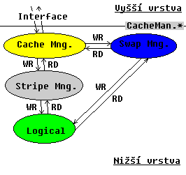
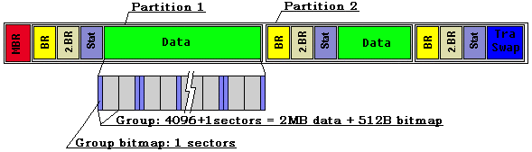
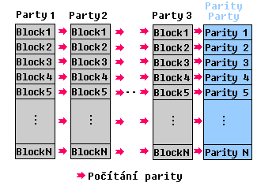
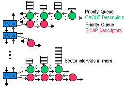

Reliable File System
Spodní vrstva
Dokumentace: Martin Dvoøák
Co by nemìlo ujít Vaší pozornosti:
Srdce spodní vrstvy CacheMan - pro pochopení toho jak spodní vrstva funguje je nutné si proèíst kapitolu o nìm. CacheMan je nositelem mazanosti cache. CacheMan byl navr�en tak, aby horní vrstva NEMUSELA vùbec LOGOVAT a také se nemusela v
ùbec starat o KONZISTENCI - vše je v nìm zabudováno! Cacheman je interfacem mezi spodní a horní vrstou - je poskytovatelem slu�eb. Zásadní vıznam pro práci s ním má pojem package.
Další superdùle�itou kapitolou je kapitola o TRANSAKCÍCH a LOGOVÁNÍ. Kdy� u� nic jiného tak tato kapitola ozøejmí proè nazıvat náš file system RELIABLE.
Examply
Examply, které pøedvádìjí spodní vrstvu jsou tyto projekty:
example1.prj, ( main v EXAMPLE1.LOW ) - vytvoøení diskù, oblastí, formátování
example2.prj, ( main v EXAMPLE2.LOW ) - dva examply na fungování CacheMana
example3.prj, ( main v EXAMPLE3.LOW ) - transakce, logy a recovery spodní vrstvy
example4.prj, ( main v EXAMPLE4.LOW ) - striping a záchrana disku
Všechny informace k tomu kterému examplu jsou v jeho main.cpp. Tam najdete co example provádí, co máte udìlat...
Obsah
Schema spodní vrstvy file systému
Jak ji� bylo zmínìno interfacem mezi horní a spodní vrstvou je Cacheman. Horní vrstva volá pøi obvyklé práce vlastnì pouze jeho funkce. Ty jsou dekladrovány v CACHEMAN.H

Struktura dat na disku

Nyní podrobnìji k jednotlivım strukturám...
Master Boot Record
Master boot record má klasickı formát. Jeho velikost je 1 sektor == 512B. Vyhrazena je pro nìj ale celá první stopa. Pro vìtší bezpeènost pøi ka�dé zmìnì MBR duplikujeme jeho obsah do všech sektorù první stopy. V pøípadì havárie tedy mù�e záchranná utili
ta s velkou pravdìpodobností MBR restaurovat.
Formát Master boot recordu je deklarován v FSTYPES.H
Boot Record
Zabírá jeden sektor. Obsahuje klasické informace. Struktura ne nepodobná MBR. Oproti MBR obsahuje informace dùle�ité pro oblast:
- Dirty flag oblasti: je TRUE pokud oblast nebyla èistì uzavøena. Tento flag se kontroluje pøi startu systému. Pokud je oblast dirty nastartuje se záchranná a kontrolní utilita. Pøi uzavírání systému se nastavuje na FALSE.
- Adresa FNODU root recordu v oblasti ( adresa logická, relativní od zaèátku oblasti ).
- Poèet grup v oblasti.
- ...
Formát Boot recordu je deklarován v FSTYPES.H
The Second Boot Record
Je rozšíøením + èásteènou zálohou Boot Recordu. Obsahuje kopii BIOS parametr bloku
boot recordu -> ten obsahuje nejdùle�itìjší informace dùle�ité pro orientaci v oblasti
( bez nich se to dá v podstatì zabalit ). Dále obsahuje statistické informace jako: poèet volnıch sektorù v oblasti, poèet sektorù se statistikou grup ( viz ní�e ), duplikát poètu grup v oblasti, label oblasti. The Second Boot Record není bezpodmínìènì
nutnı pro bìh RFS. Informace z nìj vyu�ívají funkce pro alokace/dealokace sektorù. Jeho vıpadek není fatální.
Formát The Second Boot recordu je deklarován v FSTYPES.H
Statistika grup
Je to oblast nìkolika sektorù, která udr�uje informaci o tom kolik je v ka�dé grupì v oblasti volnıch sektorù ( Word ). Ka�dı sektor tedy obsahuje informace o 512/2 grupách, poèet statistickıch sektorù se øídí poètem grup. Tyto statistiky jsou spravován
y a vyu�ívány funkcemi CacheManAllocateSector a CacheManFreeSector z CACHEMAN.*. Funkce statistiku pou�ívají napø. pro rychlé vytypování grupy pro alokaci.
Oblast ( myšlena partition )
Oblasti jsou èíslovány od 1 do 4. Vytváøení se provádí pomocí funkcí z FDISK.H
Limity uvnitø jedné oblasti:
Datová kapacita grupy v sektorech: 12b sektorù ... 4k * 512B = 2MB
Poèet grup v oblasti: 20b ... 1M grup
Velikost grupy: 4k datovıch sektorù + 1 sektor bitmapa
Maximální adresovatelná velikost FS: 32b sektorù ... 4,3M * 512B = 2,2TB neboli 1M grup * 2MB velikost grupy = 2,2TB
Grupy
Data v oblastech jsou organizována v grupách.
-
Grupa se skládá z bitmapy ( 1 sektor )a datovıch sektorù ( 4096=512*8 sektorù ). Bitmapa informuje o obsazení sektorù v grupì: BIT: 1..sektor je volnı, 0..sektor je plnı. Umístìna je u sudıch grup na poèátka a u lichıch na konci => tím vzniká souvislı
datovı prostor délky 4MB.
-
Èísla tıkající se grup:
Datová kapacita grupy v sektorech: 12b sektorù ... 4k * 512B = 2MB
Poèet grup v oblasti: 20b ... 1M grup
Velikost grupy: 4k datovıch sektorù + 1 sektor bitmapa
-
Poslední grupa v oblasti vyjde zpravidla neúplná. Pøi formátování ji vytvoøím - vytvoøím hlavièku, verify sektory, do hlavièky poznaèím sektory které v grupì chybí ( za koncem oblasti ) jako plné. Pozdìji ji tedy lze pou�ít. Nyní je, ale implementace tak
ová, �e se poslední grupa nepou�ívá vùbec. Proè ji nepou�ívám:
-
Pøi ka�dém zápisu èi ètení musí bıt test zda to není poslední grupa. Do té se pøistupuje jinak - a� lichá èi sudám má bitmapu v�dy na poèátku - velmi to zpomalovalo.
-
mù�e mít velikost do 1 do 4096 sektorù a tak se mi mù�e stát, �e budu mít pouze sektor na bitmapu. Kdybych ji chtìl pou�ívat na nìjaké servisní informace opìt nevím co vše by se tam dalo ulo�it.
-
Jak se vyrovnávám s BADSEKTORY...
-
Vyskytnou-li se pøi formátování: sektor se oznaèí v hlavièce bitmapy jako zaplnìnı. Vyšší vrstva si ho nealokovala ... nemù�e tedy o nìj po�ádat a ni�ší vrstva si myslí, �e je plnı a tak ho nikomu nedá ... tak se sektor nepou�ívá.
-
Vyskytnou-li se za bìhu: øeknu vyšší vrstvì, �e sektor se nepodaøilo zapsat a já ho oznaèím jako plnı. Vyšší vrstva u� to vyøídí ( pokusí se sektor zapsat jinam: naalokuje si jinde místo a zapíše ho tam ). Kdy� to nastane pøi readu postupuje se obdobnì p
ouze nahoru dodám co jsem na tøikrát pøeèetl ( vìtšina bude asi špatnì proto�e CRC nesedlo, ale je lepší dodat nìco ne� nic ).
-
Co se tıèe alokace sektorù v grupì:
-
Vyšší vrstva má mo�nost si øíci za kterım sektorem a v které grupì má alokovaná oblast zaèínat - spodní vrstva se jí sna�í vyhovìt ( CacheManAllocateSector() CACHEMAN.H ).
-
PØEDALOKOVÁVÁNÍ nechávám na vyšší vrstvì - ta si øekne o víc ne� chce a já jí takovou oblast dodám ( sám však nevím, jestli všechno vyu�ije nebo si syslí do budoucnosti ).
-
HLEDÁNÍ GRUPY VHODNÉ PRO ALOKACI: k dispozici je statistika zaplnìní celé oblasti + jednotlivıch grup ( viz. vıše ). Pokud caller specifikoval, kde by mìla alokovaná oblast zaèínat tak skouším hledat od tohoto sektoru v grupì dále. Pokud nic nenaj
du prohledám grupu od zaèátku a� po specifikované místo. Pokud neuspìji ani teï hledám v následující grupì ( a tak eventuelnì projdu všechny grupy oblasti ). Pøi hledání se hojnì vyu�ívají statistiky ( ne� naètu bitmapu grupy ze statistiky zjistím zda to
má vùbec smysl).
Pokud caller nespecifikoval, kde má alokovaná oblast zaèínat - vystøelím do grup náhodnì. A pak pøi hledání postupuji vıše uvedenım zpùsobem. Funguje to celkem spolehlivì. Dùvod proè to provádím je ten, �e se file system zaplòuje rovnomìrnì ( nealokuje s
e od poèátku - data jsou roztroušena po disku ) a tak se sni�uje pravdìpodobnost fragmentace. Jakmile je místa ménì, tak procházím statistiku a hledám podle ní. Velikosti dìr v grupách si nepamatuji. Udr�ování takové informace by bylo jak èasovì tak pamì
�ovì velmi nároèné a podle mého názoru by se to ve vısledku ani nevyplatilo. Já v nejhorším pøípadì musím navštívit více grup. Díky alokaèní strategii uvedené vıše a statistikám se docela slušnì orientuji a souvislé prázdné oblasti se zpravidla najdou. S
e zaplòováním filesystemu se vše samozøejmì zpomaluje.
Alokace provádí funkce CacheManAllocateSector() z CACHEMAN.H ).
-
Co grupy daly a co vzaly...
-
Data jsou soustøedìna více u sebe. Grupy jsou menší a tak pokud ztratíme jednu grupu nepøijdeme o tolik informací.
-
Pou�ití grup umo�nilo zvolit jako alokaèní jednotku sektor ( ve smyslu úspornosti re�ijních informací ) a tím se zmenšil slack space.
-
Udr�ování grup = bitmap nìco stojí.
Funkce pro práci s grupami jsou deklarovány v GROUP.H, deklarece fcí provádìjících alokace a dealokoce sektorù v CACHEMAN.H implementace je v ALLOCFRE.CPP.
Fyzické chyby media a jak jsme se s nimi vyrovnali
Velikosti posti�ené oblasti: chyby bitové, bytové jsme se rozhodli na úrovni filesystemu neošetøovat. Vyu�ívat budeme hardwarového zabezpeèení. Ka�dı disk má za sektorem 32 bitovı ECC èásteènì samoopravnı kód. Je tedy zbyteèné zajiš�ovat data lepším kóde
m apod. Menší chyby bitového rázu ( tuším do 4B ) by tedy mìl opravit hardware.
Striping
My jsme se rozhodli pro ochranu na úrovni sektorù a to metodou STRIPINGU. Data jsou na discích rozlo�ena takto:

Jak je vidìt tak díky rozlo�ení dat mù�ou disky fungovat absolutnì nezávisle na sobì.
Data NEjsou jako u ostaních systémù RAID rozlo�ena tak, �e následující blok je na následujícím disku. Takovı systém je sice tolikrát rychlejší ne� 1 disk kolik je v nìm diskù ( 5 diskù - 5*rychlejší operace (èistì teoreticky)), ale má to bezpeèno
stní nevıhody. Disk nemù�e fungovat samostatnì proto�e data jsou rozlo�ena + pokud dojde k vıpadku více ne� dvou diskù je konec proto�e data všech ostatních diskù nedávají smysl - jsou kompletnì ztracena.
Naše ulo�ení dat je MÉNÌ vıkonné, ale je mnohem bezpeènìjší. Ka�dı disk je autonomní, má svoje data na ostatních nezávislá. Mù�e fungovat jak sám tak ve strivacím systému - striping se mù�e zapínat/vypínat po pøebootování. Je to vlastnì tak, �e k
dy� máte v poèítaèi dva disky, mù�ete tam pøidat paritní, zapnout striping file sytemu a od té chvíli jedete bezpeènì. Pak paritní disk vyndáte a systém funguje dál. Nejvìtší pøínos stripingu v tomto modelu je ten, �e pokud se vyskytne na nìkterém z dato
vıch diskù badsektor o data nepøijdete, proto�e ty se pomocí parity dopoètou.
Vlastnosti:
-
stripovací jednotka je oblast - nemusí to tedy bıt celı fyzickı disk. Swapovací oblasti tedy nepodléhají stripingu a systém zbyteènì nebrzdi.
-
stripovací oblasti musí bıt stejnì velké
-
stripovacích datovıch oblastí mù�e bıt teoreticky libovolnı poèet ( paritì je to jedno ).
-
overhead: (1/poèet datovıch diskù+1)*100 procent. Èím více diskù, tím menší overhead.
-
pøi vıpadku jednoho z datovıch diskù se dopoète jeho obsah z ostatních datovıch diskù a disku paritního.
-
pøi vıpadku paritního disku se nikam nepoèítá parita - systém je bez zabezpeèení.
-
vıpadek 2 a více diskù. Vypadá to sice nepravdìpodobnì, ale stát se to mù�e. Disky mohou zaèít fungovat oddìlenì. Obsah 2 diskù je ztracen, obsah ostatních diskù je zachován.
-
BADSECTORY na discích a jejich souvislost se stripingem.
-
BADSECTOR na datovém disku: obsah sektoru se dopoète z ostatních datovıch diskù a disku paritního. Do vyšší vrstvy se ohlásí, �e se sektorem nelze pracovat, ale �e data byla zachránìna. Opravená data se pošlou do vyšší vrstvy, v bitmapì se sektor oznaè
í jako full. Parita se nyní poèítá tak, �e pokud sektor nelze pro vıpoèet parity pøeèíst, nahradí se pro vıpoèet jeho obsah 0x000... a takto se parita vypoète.
-
BADSECTOR na paritním disku. Celé patro ( datové sektory ze kterıch se parita poèítala ) se postupnì musí prohlásit za neplatné. Prázdné sektory se oznaèí jako full a poznaèí se, �e jsou bad ( i kdy� to není pravda ). Pou�ité sektory: kdykoli si vyšší vr
stva øekne o data z tohoto levelu, ohlásí se, �e datovı SEKTOR je bad ( i kdy� to není pravda ) a �e data byla zachránìna. Tím se postupnì data z posti�eného levelu pøesunou jinam.
Nic lepšího jsem nevymyslel. Podle mého názoru je nesmysl po vıpadku paritního sektoru dohledávat, kterému filu sektor patøí a pøealokovávat ho - to by bylo èasovì neúnosné. Takto se ale mù�e stát, �e se nepou�ívané sektory nepøesunou.
Re�ijní struktury
Struktury, které dr�í seznam stripovanıch oblastí, stav stripingu a vùbec vše dùle�ité co se ho tıká jsou deklarovány v CACHESUP.H.
//---------------------------------------------------------------------------------
//- STRIPING STRUCTURES - STRIPING STRUCTURES - STRIPING STRUCTURES -
//---------------------------------------------------------------------------------
struct _StripItem : PriQueueItem
{
byte Device;
byte Party;
dword Begin; // logical HD sector 0..
dword End; // logical HD sector 0..
dword Number; // End-Begin+1 ( data devices )
byte Type; // PARITY_STRIP || DATA_STRIP - used for table on disk
};
typedef struct far _StripItem StripItem;
class far DataStripsQueue : public PriQueue
{
public:
DataStripsQueue( void ):PriQueue() { return; };
void Insert( StripItem far *Item );
StripItem far *FindFirstParty( void );
StripItem far *FindNextParty( StripItem far *Actuall );
bool IsInStripingArea( byte Device, dword Logical );
void Show( void );
word DeleteParty( byte Device, byte Party );
word WriteSingleTable( byte Device, byte Party );
word WriteTablesToPartys( void );
// these two functions would be methods of StripSession
// but here is easier implementation
bool IsStriped( byte Device, byte Party ); // checks ParityHD too
word WriteSingleOffTable( byte Device, byte Party );
word WriteOffTablesToPartys( DataPartysQueue far * DirtyDataPartys );
~DataStripsQueue();
};
struct far _StripSession
{
byte StripingIs; // ON / OFF
DataStripsQueue DataHDs; // data HDs queue
StripItem ParityHD; // parity HD
};
typedef struct far _StripSession StripSession; // static structure in stripe.cpp
Struktura StripSession obsahuje flag zapnutí / vypnutí stipingu a frontu deskriptorù stripovanıch oblastí a deskriptor paritní oblasti. Jak si mù�ete všimnout v deskriptorech, striping se orientuje podle logickıch sektorù na device ( nikoli na partyšnì )
. Deskriptory jsou také pou�ívány jako polo�ky stripovacích tabulek na disku.
Inicialize stripingu
Následuje popis toho co se dìje pøi startu systému se stripingem. Implementace je v STRIPING.CPP, co která funkce dìlá poznáte podle názvu nebo podle komentáøe pod hlavièkou v místì implementace funkce.
Algoritmus:
1) Pøedchozími operacemi jsou v pamìti pøipraveny fronty CLEAN a DIRTY oblastí ( ve funkci FSOpenFileSystem() z INIT.CPP ) . Nyní se nacházím ve funci InitializeStriping() STRIPING.CPP.
2) Beru oblast po oblasti a hledám na nich konfiguraèní tabulky stripingu.
3) Vezmu tedy z fronty první dosud nezkontrolovanou oblast. Pokud jsou všechny oblasti zkontrolovány GOTO 8)
4) Pokud na ní tabulka neexistuje beru z fronty další oblast GOTO 3). Pokud tabulka existuje GOTO 5)
5) Provede se analıza tabulky. Pokud je v ní "striping on this device OFF" GOTO 3) jinak GOTO 6)
6) Je to první nalezená tabulka? ANO - ulo�ím si ji do speciálního bufferu. NE - porovnám ji s první nalezenou tabulkou a nastavím si podle toho flag FOUNDED_TABLES_ARE_SAME ( TRUE/FALSE ).
7) Všechny tabulky byly naèteny. Nyní se podle první naètené tabulky testuje, které oblasti z ní skuteènì existují a které v systému nejsou. Pokud oblast je uvedena v tabulce a v systému není zvıši se poèítadlo mrtvıch oblastí ( Dead++ a zapamatuje se ty
p oblasti )
8) Dead==0 a tabulky stejné - striping se nahodí v normálním módu - KONEC
9) Dead==1 a typ mrvé oblasti je RFSData - nahodí se rescue utilita, která provede záchranu ztracené oblasti do oblasti jiné. Viz. ní�e. Po této akci se ještì nahodí rekonfiguraèní utilita, kde má u�ivatel mo�nost ještì session doladit. Po rekonfiguraci
- KONEC.
10) Dead>=2 nic nelze zachránit. Dvì a více mrtvıch oblastí to je moc. Jediné co zbıva je rekonfigurace sešny. Po rekonfiguraci - KONEC.
Setup utility
Konfiguraèní mód se nabídne u�ivateli pøi startu systému. V nìm má mo�nost pøidávat, ubírat a mìnit seznam oblastí na kterıch bude striping probíhat. Striping zde lze zapnout/vypnout. Lze také vypsat informace o jednotlivıch oblastech. Po aktualizaci sez
namu se provede pøepoèet parity na paritním disku ( pokud je striping zapnut ).
Rescue utility
Implementace je v STRIPING.CPP. Ve funkci StripingRescue() se provádí nastavení a záchranu provádí funkce STRIPRescueParty().
Pokud jsme pøišli o jednu datovou oblast nic se nedìje. Jsme toti� schopni ji z parity a zbylıch datovıch oblastí zrekonstruovat.
Záchrana jednotlivého sektoru se provádí takto.
Naètu si z paritního disku sektor s paritou. Potom jednotlivì naèítám sektory z datovıch oblastí a v�dy provádím XOR se sektorem parity. Nakonec mi zbyde v bufferu kde jsem mìl ulo�enu paritu obsah ztraceného sektoru.
Záchrana oblasti.
Provede se záchrana Boot Recordu. Naète se Boot Record oblasti kam zachraòuji. V tomto boot recordu se zmìní informace jako adresa FNODU root direktoráøe, poèet grup v oblasti, poèet rezervovanıch sektorù na informace zachránìného Boot Recordu. Zbytek se
ponechá tak jak je a Boot Record se zapíše. Obdobná operace se provede záchrana The Second Boot Recordu. Zbytek oblasti ze zrekonsruuje jak bylo uvedeno v odstavci o záchranì jednoho sektoru.
Ètení a zápis sektorù ve stripovacím módu
Jak ji� bylo vıše uvedeno, striping se orientuje na úrovni logickıch sektorù na device. Proto vıbìr toho, která funkce se pou�ije ( klasická nebo stripovací ) se provádí ve funkci pracující na této úrovni. Všechny vıše postavené moduly volají tuto funkci
a ta u� provede vıbìr za nì. Zde je kód ètecí funkce ( zapisovací je analogická ) z STRIPING.CPP, kterı myslím vysvìtlí více ne� dlouhı popis.
word ReadLogicalSector( byte Device, dword Logical, void far *Buffer, byte Number )
// this function is used by upper level
{
#ifdef DEBUG
printf("\n READing sector %lu... ", Logical );
#endif
if(
StripingSession.StripingIs==ACTIVE
&&
StripingSession.DataHDs.IsInStripingArea( Device, Logical )
)
{
#ifdef DEBUG
printf(" STRIPing version...", Logical );
#endif
return STRIPReadLogicalSector( Device, Logical, Buffer, Number );
}
else
{
return CLASSICReadLogicalSector( Device, Logical, Buffer, Number );
}
}
STRIPReadLogicalSector() je tedy funkce, která provádí ètení ve stripovacím módu. Ètení probíhá takto. Naèítají se odpovídající sektory z jednotlivıch datovıch oblastí a poèítá se parita levelù. Nakonec se parita zkontroluje a pøípadnì opraví. Naètená da
ta se nakopírují do bufferu volající funkce.
STRIPWriteLogicalSector() provádí zápis. Zápis probíhá takto. Naètou se data z jednotlivıch datovıch oblastí a spoèítá se jejich parita KROMÌ OBLASTI DO KTERÉ BUDU ZAPISOVAT. K paritì se pøipoètou zapisovaná data. Následuje zápis dat a hned po nìm zápis
parity.
Pro podrobnosti nahlédnìte prosím do zdrojového kódu.
Pár slov k implementaci jako takové
Striping je místo, kde se nejvíce projevilo, �e provádíme implementaci našeho file systemu pod DOSem. Pøi implementaci jsem musel velmi šetøit pamìtí a tak jsou pøepoèty dìlány po sektorech ( a tedy velmi hloupì ). Z toho plyne, �e záchrany, pøepoèty par
it i bìh je velmi pomalı. Do bufferù se data z jednotlivıch diskù ètou po sobì. Pokud by jsme systém implementovali pod UNIXem forknul by jsem si na ka�dé ètení jedno vlákno a ètení by probíhalo paralelnì ( tedy tolikrát rychleji ne� pøi normálním ètení
kolik je datovıch diskù ( v naší implementaci díky sekvenènosti je ale tolikrát pomalejší )). Na implementaci stripingu se tedy prosím dívejte spíš jako na špatnou implementaci snad dobrıch nápadù, které by jinde mohly bıt implementovány mnohem lépe.
Díky za pochopení.
CacheMan = Cache + Swap, package, konzistentní zápisy
Naším cílem je zachování konzistence souborù. Proto data se kterımi se bude pracovat zorganizujeme do logickıch celkù - packageù. Zhruba øeèeno, pøi práci s daty souboru RD/WR vyšší vrstva na vlastní �ádost získá nìjaké PackageID. Pøi všech dalších opera
cích nad tímto souborem bude pou�ívat tuto identifikaci. Spodní vrsta tedy bude vìdìt, která data k sobì logicky patøí. Na konci práce se souborem nebo ve chvíli, kdy bude horní vrstva vìdìt, �e byla všechna potøebná data "zapsána", zavolá horní vrstva C
ommitPackage( PackageID ). Na to provede spodní vrstva "double write" co� je zápis, kterı zaruèuje konzistenci. Ten se provede tak, �e se obsah cache zapíše do odkládací oblasti, tato skuteènost se zapíše do logu a následnì se kompletní package nakopíruj
e do cílového souboru.
V pøipadì havárie tedy bude mo�né operaci dokonèit.
Konzistentním zápisùm bylo nutné podøídit pøedevším cacheovací mechanismus. Museli jsme navrhnout cache tak, aby ji vyšší vrstva mìla pøehled o tom CO JE SKUTEÈNÌ ZAPSÁNO NA DISKU A CO JE POUZE V CACHE. CacheMan se skládá ze dvou èástí:
(i) pamì�ová èást: klasická pamì�ová cache
(ii) odkládací èást: pokud dojde pamì� v pamì�ové èásti cache, musí se dirty data odlo�it na swapovací oblast konzistentních zápisù. Nelze je zapsat pøímo do souboru - nevím toti� jestli u�ivatel zapsal do vše co chtìl.
Schema CacheMana:

Pro cacheování jsme si zavedli package. Je to zpùsob jak pøedává horní vrstva cache informaci o tom, �e urèitá data k sobì logicky patøí. Díky tomu cache ví, jak má data do souboru zapisovat, aby zùstal v konzistentním stavu.
Typicky pøi otevøení souboru za�ádá vyšší vrstva o vytvoøení package ( package mù�ou bıt jemnìjší, tøeba nìkolik na jeden soubor). Vytvoøí se struktury v cache a cache vrátí horní vrstvì èíslo vytvoøeného package. Potom kdykoli ze souboru vyšší v
rstva data ète/zapisuje odkazuje se na nì tímto èíslem. Tato data, buï zústávají v cache nebo se odkládají na swap. Do souboru se ulo�í a� po zavolání
CommitPackage( PackageID ). Tak má vyšší vrstva kontrolu nad tím co je v cache a co je ve skuteènosti na disku.
Pracuje se v�dy s intervaly sektorù. Operace jsou navr�eny tak, �e package nikdy neobsahuje sektor dvakrát. DOKONCE PLATÍ �E V CELÉM CACHEOVACÍM SYSTÉMU MU�E BİT SEKTOR NEJVİŠE JEDNOU!. Buï sektor v CacheManovi není, nebo je pouze v cache, nebo j
e pouze na swapu. Nyní popíši jak se postupuje pøi jednotlivıch operacích:
Ètení
Dostanu èíslo package, ke kterému se ètení vztahuje - PackageID. Vytvoøím si bitmapu pro interval sektorù, kterı ètu ( ètu je do userbufferu ). Bit v bitmapì odpovídá sektoru v userbufferu. Kdykoli naètu sektory, nastavím odpovídající bity na 1. Konèím k
dy� jsou všechny bity nastaveny na 1 - všechna data byla naètena.
Postup:
a) prohledám swap. Procházím swap descriptory package PackageID a ètu data do userbufferu a znaèím v bitmapì ( interval sektorù kterı mám naèíst se èásteènì nebo úplnì pøekrıvá s intervalem na swapu ). Poznámka: kdy� se data dostala na swap, znamená to �
e jsou dirty - proto s nimi zaèínám. Projdu celou frontu swap deskriptorù package PackageID.
b) procházím cache. Procházím cache descriptory package PackageID. Pokud se interval sektorù kterı mám naèíst èásteènì nebo úplnì pøekrıvá s intervalem na v cache kopíruji data do userbufferu a znaèím v bitmapì. Projdu celou frontu cache deskriptorù.
c) pokud ještì chybí nìjaké sektory, natáhnu je pøímo ze souboru.
Pokud je dost pamìti umístím nata�ená data do cache mojeho package.
Zápis
Dostanu èíslo package, ke kterému se zápis vztahuje - PackageID. Vytvoøím si bitmapu pro interval sektorù, kterı budu zapisovat. Bit v bitmapì odpovídá sektoru v userbufferu ze kterého zapisuji. Kdykoli zapíši sektory, nastavím odpovídající bity na 1. Ko
nèím kdy� jsou všechny bity nastaveny na 1 - všechna data byla zapsáno. ZDE SE DATA ZAPISUJÍ POUZE DO CACHEMANA NE DO SOUBOURU ( TO PROVÁDÍ A� COMMIT PACKAGE! )
Postup:
a) prohledám swap package PackageID. Na swapu jsou pouze dirty data, proto je musím pøepsat jako první. Procházím swap descriptory a zapisuji data pøi èásteèném èi úplném pøekrytí intervalù na swap a znaèím v bitmapì. Projdu celou frontu swap deskriptor
ù.
b) procházím cache package PackageID. Procházím cache descriptory. Pokud se interval sektorù kterı mám zapsat èásteènì nebo úplnì pøekrıvá s intervalem na v cache, kopíruji data do cache + v markuji jako dirty + znaèím v bitmapì. Projdu celı frontu cach
e deskriptorù.
c) pokud ještì chybí nìjaké sektory zkusim:
(i) pokud je místo v cache - vytvoøím desckriptor, data nakopíruji tam + omarkovaji descr dirty + poznaèím v bitmapì.
(ii) pokud není místo v cachu zkusím swap. Analogicky.
(iii) pokud není místo na swapu následuji zápis pøímo do souboru - PORUŠUJE KONZISTENCI.
Velikost cache, swapovací oblasti
Zde je myslím u� celkem vidìt jak systém funguje. Zále�í tedy na u�ivateli jak velkou si zvolí cache a jak velkou odkládací oblast. Èím vìtší budou tyto oblasti tím lépe budou konzistentní zápisy fungovat ( vìtší objem dat, vìtší soubory ). Pokud bude ca
che dostateènì velká, uštøí se ètení ze swapu - systém bude rychlejší.
Vše je tedy na u�ivateli. Èím bude velkorysejší, tím rychleji a lépe bude vše fungovat.
Commit package
Provede konzistentní zápis do souboru.
a) prochází se cache descriptory package PackageID.
- NOTDIRTY polo�ky se dealokují.
- DIRTY polo�ky se ukládají na swap a ponechávají se v pamìti ( pøi jejich zápisu do filu se toti� pozdìji UŠETØÍ jeden read - nemusí se èíst ze swapu, ale zapíšou se rovnou z pamìti. Tento postup je korektní, proto�e pokude vypadne proud tak se po res
tartu ze swapu doètou... ). Jejich seznam se zapisuje do logu.
Pokud je swapování vypnuto nic se na swap samozøejmì nekopíruje a data se "nekonzistnì zapisují pøímo do souboru".
b) prochází se swap descriptory package PackageID. Seznam intervalù se pøipíše do logu.
c) prochází se podruhé swap descriptory a kopíruje se ze swapu do filu, descriptory se následnì dealokují.
Pokud dojde v tomto místì k vıpadku proudu nic se nedìje. Po restartu systému se udìlá REDO: podle logu se ze swapu data znovu zkopírují do souboru - KONZISTENCE JE ZARUÈENA ( na swapu jsou nyní ji� všechna data - i z cache! ).
d) prochází se podruhé cache descriptory a data se z cache kopírují do souboru, descriptory se následnì dealokují ( je to korektní a rychlejší - viz. vıše ).
e) do logu se zapíše COMMIT a logovací file se sma�e.
Byly tu i jiné mo�nosti...
Místo double writes pøicházela ještì druhá mo�nost jak provést konzistentní zápis: zapsat data z cache nìkam do datové oblasti, zapsat to do logu a pak zaèít pøepojovat odkazy na sektory v FNODEu ze starıch na nové aktuální sektory. Pro tuto mo�nost jsem
se nerozhodl proto�e:
- Docházelo by k velké fragmentaci dat. Se zaplòováním file systemu by u� data nebyla u sebe ( pøipomínám, �e horní vrstva si mù�e øíci za kterım sektorem chce nové sektory naalokovat, spodní vrstva se potom sna�í alokovat co nejblí�e tomuto sektoru ),
nato� v té samé grupì. Ve vısledku by to, podle mého názoru, bylo ménì vıkonné ne� pomìrnì rychlé souvislé zápisy ( ménì seekování ).
- Swapovalo by se mezi data
- Problém by šel mnohem hùøe rozdìlit na horní a spodní vrstvu tak jak je tomu nyní. Spodní vrstva by toti� musela hrabat ve strukturách vrstvy horní a vice versa.
Funkce CacheMana jsou deklarovány v CACHEMAN.H, dále jsou vyu�ívány funkce podpory cache CACHESUP.H, kde jsou deklarace package a re�ijních struktur...
TRANSAKCE a LOGY : *.ALF, *.NOT, *.OKA, *.HLP, *.CML
Logy jsou páteøí transakèního systému RFS ( jestli mu tak lze øíkat ).
Nejdøíve po jednom popíši jednotlivé logy. Pokud chcete jejich strukturu do podrobna zkoumat nebo Vás zajímá implementace => nahlédnìte prosím do zdrojákù. Pozdìji v kapitole o tom co a jak se pomocí logù opravuje vyjasním jejich konkrétní vıznam a v
ìci jako jak se logy vyu�ívají navzájem a jaké jsou jejich vztahy.
*.ALF - ALLOC/FREE log
Je základním typem logu. Vìtšina ostatních logù na nìm stojí. Jeho vyjímeèností je to, �e se v jedné oblasti mù�e vyskytovat nejvıše jeden. Je to z dùvodu serializace transakcí. Existence nejvıše jednoho ALF logu mi zaruèuje, �e transakèní operace budou
provádìny poøadì.
Tento log je pou�íván funkcemi CacheManAllocateSector() a CacheManFreeSector(). Tyto funkce volají fci AllocFreeUsingLog() ( RECOVERY.H ). Tato fce má zásadní vıznam. Provádí toti� konzistentní zápis bitmapy. To znamená, �e tr
ansakènì pomocí logu ALF provede zmìny ve statistikách a zápis bitmapy tak, aby vše odpovídalo a úspìšnou alokoci rovnì� transakènì zaznamená do OKA ( OK Allocated log - viz. ní�e ) logu package. ALF record se pøi crash v�dy ROLLBACKUJEuje ( Undo
AlfLog() z RECOVERY.H )=> nikdy se neprovádí redo ( nicménì jeho struktura je navr�ena tak, �e by redo šlo z informací v nìm obsa�enıch provést ). Další dùle�itou vlastností ALF logu je, �e operace jeho rollbacku je IDE
MPOTENTNÍ tzn. dojde-li v dobì rollbacku ke crash mù�e se celá operace rollback provést znovy pøes ji� jednou provedenı a vše bude OK.
Struktura ALF logu ( pro detaily nahlédnìte do zdrojákù )
// Log structure: Size: Off:
//
// LOG_BEG_TRANSACTION ( 0 Alloc, 1 Free ) 8 0
//
// LOG_BEG_WR_BMP 8 8
// write_to_log GroupID 4 16
// write_to_log Logical 4 20
// write_to_log LogicalInBmp (0-4095) 4 24
// write_to_log Number 2 28
// write_to_log Bitmap 512 30
// LOG_CHECKPOINT 8 542
// write_to_party Bitmap ..
// LOG_COM_WR_BMP 8 550
//
// LOG_BEG_WR_GRPSTAT 8 558
// write_to_log OldGrpFreeSpace 2 566
// LOG_CHECKPOINT 8 568
// write_to_party NewGrpFreeSpace ..
// LOG_COM_WR_GRPSTAT 8 576
//
// LOG_BEG_WR_SCND_BOOT 8 584
// write_to_log OldPartyFreeSpace 4 592
// LOG_CHECKPOINT 8 596
// write_to_party NewPartyFreeSpace ..
// LOG_COM_WR_SCND_BOOT 8 604
//
// LOG_BEG_WR_OKA 8 612
// ( call function ... which writes it transactionaly to OKA ) ..
// LOG_COM_WR_OKA 8 620
//
// LOG_COM_TRANSACTION 8 628
// ---------
// Total: 636
Vlastností kterou se liší od ostatních logù stejnou strukturou jako je NOT je to, �e je vytváøen pouze pro alokace v nìjakém Package ( pøipomínám, �e pøi práci s cache se na package odkazuje pøi operacích loadtocache/load/save/alloc/free/commit ).
Tedy package ID je pozpodmíneènì nutné pro jeho vytvoøení.
*.NOT - NOT PackageID Alloc/Free log
Tento log má absolutnì stejnou strukturu jako ALF log. Liší se od ALF logu tím, �e je vytváøen pøi alokacích mimo package. Pøíkladem pou�ití takovı alokoací je alokace místa pro logy. Logy jdou mimo cache -> zápisy i ètení z nich se provádìjí pøímo -&
gt; nevyrábí se pro nì package proto�e nemá smysl provádìt commit kdy� cache nic z nich nesmí obsahovat. Na NOT logu se V�dy provádí operace ROLLBACK, která je IDEMPOTENTNÍ. Rollback se provádí funkcí UndoAlfLog() z RECOVERY.H
).
*.OKA - OK Allocated/Released log
Log OKA slou�í pro evidenci naalokovanıch/uvolnìnıch sektorù toho kterého package. Ka�dı package má vlastní OKA log. V prùbìhu práce se allokace/dealoakace v package provádìjí pøímo ( neodkládají se ). Pokud dojde ke crash pøed commitem musí bıt takové m
ísto uvedeno do pùvodního stavu. Jak u� bylo vıše uvedeno, tyto operace se provádìjí pomocí ALF logu, kterı pøipisuje do OKA logu ty úspìšné. Pøi crash se tedy provede rollback OKA zpìtnou analızou ( podrobnìji ní�e ) a vše se uvede do pùvodního stavu. V
rámci commitu se provádí mazání OKA logù - to je ta lepší mo�nost. Uvnitø commitu se v urèité dobì u� najisto ví ( viz ní�e ), �e místo bude pou�ito -> OKA log se mù�e smazat. Do OKA logu se pøipisuje nakonec. OKA log se skládá z recordù této struktury:
typedef struct
{
dword Record_Beg; // ALLOC_RECORD || FREE+RECORD
dword State; // NORMAL_STATE || ROLLBACKED_STATE
dword Logical;
word Number;
dword GroupID;
dword LogicalInBmp;
dword Record_End; // OKA_RECORD_END
}
OkaRecord; // sizeof()=26
Podrobnosti RECOVERY.CPP.
*.HLP - HeLP Alloc/Free undo log
Tento log má absolutnì stejnou strukturu jako ALF log. Je pou�íván pøi rollbacku OKA logu. Jak se provádí rollback OKA logu je popsáno ní�e.
Podrobnosti RECOVERY.CPP.
*.CML - Commit undo/redo log
CML je log, kterı se pou�ívá pro zajíštìní konzistence commitu urèitého package( pøipomeòte si jak se provádí commit ). Bìhem commitu se do CML ulo�í, kde je obsah cache na swapu ( urèeno pro double write ), kde je odlo�en zbytek na swapu ( obsah swap de
scriptorù ). Jakmile se do commitu zapíšou všechny tyto informace, ulo�í se tam checkpoint, kterı øíká "to byl poslední záznam, teï zaèínám kopírovat ze swapové partyšny na datovou". Ano zde je ta chvíle pro smazání OKA logu. Jakmile se ulo�í tento check
point, u� se bude dìlat po crash v�dy REDO -> místo bude ka�doupádnì pou�ito a tak tedy ka�dopádnì nebudu rollback OKA potøebovat. Pokud dojde ke crash pøed zapsáním magiky provádí se v�dy UNDO - nestihl se dostat obsah package/cache do odkládací obla
sti celı - takovı zápis do datové oblasti by nebyl konzistentní.
Nyní se v�dy podle CML logu naètou data ze swapu, ulo�í se do datové partyšny a místo na swapu se odalokuje ( ano pomocí ALF logu ). Mám tedy jistoto, �e bude vše konzistentní. Provedení jak REDU tak UNDO podle CML logu je IDEMPOTENTNÍ ( Zarazila vás víc
enásobná dealokace na v pøipadì crash pøi opravách - po recovery se provádí pøeformátování swapovacích oblastí. Testy jsem zjistil, �e od zaplnìní oblasti kolem pùlky kapacity je to rychlejší ne� zvláštní log a dealokace dle nìj ).
Struktura CML logu ( RECOVERY.H):
// Structure of CML record:
//
// TypeOfRecord // CACHE_INTERVAL || NOT_LAST_RECORD ( SWAP ) || BEGIN COPY
// Device; // 0, ..
// Party; // 1, ..
// SwapDevice;
// SwapParty;
// Logical;
// LogicalSwap;
// Number
//
//
// Structure of CML log file:
// Type
// CACHE_INTERVAL // intervals moved in pack commit from cache to swap
// ..
// CACHE_INTERVAL // intervals moved in pack commit from cache to swap
// NOT_LAST_RECORD // intervals in pack commit time on swap
// ..
// NOT_LAST_RECORD // intervals in pack commit time on swap
// BEGIN_COPY // checkpoint: all data on swap, begin of copy
// // from swap party to data party
Co se dìje pøi inicializaci RFS
Pro otevøení RFS slou�í funkce FSOpenFileSystem() z INIT.CPP.
Co se dìje pøi startu systému:
Testuje se zda jsou v systému pøítomné fyzické disky. Fyziké disky se berou popoøadì, na ka�dém disku se naète MBR, podle nìj se ètou všechny BR, které jsou pou�ity. V tìchto boot recordech se hledá v BR.OSID.ID magic "RFSData" nebo "RFSSwap". Pokud tam
tento magic je identifikuje se oblast jako oblast našeho file systemu. Oblasti se tøídí do ètyø spojovıch seznamù.
V prvním jsou RFSData - tj. datové oblasti, které mìly dirty flag nastaven na CLEAN ( ty jsou OK a s tìmi u� se nic dìlat nebude)
Ve druhém jsou RFSData, které mìly dirty flag nastaven na DIRTY - bude se muset provést jejich oprava.
Ve tøetím jsou RFSSwap, které mìly dirty flag nastaven na CLEAN. Ty jsou v poøádku.
Ve ètvrtém jsou RFSSwap, které mìly dirty flag nastaven na DIRTY - bude se muset provést jejich oprava.
Takto se projdou všechna zaøízení pøítomná v systému a naplní se spojové seznamy.
Nyní se zaène procházet fronta dirty RFSData na ka�dou takovou oblast se zavolá funkce RecoverParty() z RECOVERY.CPP ( viz. ní�e ), která provede opravu oblasti. Po opravì se datová oblast pøepojí do spojáku CLEAN dat
ovıch oblastí.
Takto se zpracuje celı DIRTY spoják datovıch oblastí.
Nyní se projde fronta dirty RFSSwap a ka�dá oblast z nìj se zformátuje. Data, která na nich byla u� z nich dostala funkce RecoverParty(). Nyní se tedy pouze musejí proèisti a rychlı formát je tou nejefektivnìjší metodou. Po pøeformátování se odklá
dací oblast pøepojí do spojáku CLEAN odkládacích oblastí.
Takto se zpracuje celı DIRTY spoják odkládacích oblastí.
V dalším kroku se provede nastavení dirty flagu všem oblastem ( které jsou nyní u� pouze ve dvou CLEAN spojácích ).
Provede se nahození CacheMana
RECOVERY aneb jak se opravuje pomocí logù po pádu systému
Implementace všeho o èem zde budu psát je v RECOVERY.CPP.
V této kapitole dokumentace popíši co se zaène dít, kdy� se po restartu systému zjistí, �e oblast je dirty a je ji tedy tøeba uvést do konzistentního stavu u�itím logù. Tento úkol plní funkce RecoverParty().
Co recovery v jedné oblasti dìlá:
-
Jako první se vyhledají všechny *.HLP logy ( které mají stejnou strukturu jako *.ALF ). Tyto logy se generují, kdy� se provádí rollback OKA logu. HLP log se vytvoøí a musí bıt kompletní. Po jeho kompletním vygenerování se pøejmenuje na *.ALF a za
volá se na nìj funkce UndoAlfLog() z RECOVERY.CPP ) , která provede rollback jednoho OKA recordu z *.OKA logu ( to vše se provádí v rámci rollbacku OKA filu - NE NYNÍ - vyjasòuji pouze situaci vzniku HLP logu ). Zde se vš
echny HLP logy sma�ou. Mohu to udìlat proto�e budou v pozdìjší fázi recovery vygenerovány znovu. Ještì bych rád ujasnil, �e pokud nìkde zùstane HLP log, znamená to �e byl sice vygenerován, ale nebyl pøejmenován a nemohlo se tedy ani zaèít s jeho roll
backem - nièeho se nemusím bát kdy� ho ma�u.
-
Nyní se vyhledávají *.NOT logy. Tyto logy jsou pou�ívány funkcemi pro alokaci a uvolòování sektorù operací, které nejsou cacheovány. Pou�ívají se napøíklad pøi práci s logy a s odkládacími oblastmi. Swap je na konci recovery naformátován tak�e o t
en se nemusím starat. Ale misto alokované/uvonìné v datové oblasti musí bıt uvedeno do pùvodního stavu - provede se tedy rollback NOT logu. Proto�e nebyla šance, jak zmìnu zaevidovat v FNODEu, proto�e ne� se operace skonèila systém se slo�il. Kdyb
y jsem rollback neprovedl vzniky by mi ztracené sektory, které by nikomu nepatøily nebo naopak obsazené sektory, které by byly v bitmapì oznaèeny jako prázdné.
-
Následuje vyhledání *.ALF logù jejich rollback a probublání skrz nì do jejich OKA filu ( z kterého byly volány ). Pøi rollbacku ALF file probublá do OKA a tam oznaèí sobì odpovídající record jako rollbacked. Vše se provádí tak, aby v pøípadì, �e d
ojde ke crash nyní v dobì opravy se mohlo vše dokonèit ( idempotence rollbacku ALF logu je známa ). Rollback ALF logù uvádí do konzistentního stavu ostatní log fily. Tím je myšleno to, �e u� v nich nejsou zlomky nìjakıch recordù, ale recordy celé - recor
dy jsou v nich buï typu commited nebo rollbacked.
-
Na øadì je oprava pomocí CML logù. Ty se vytváøejí v prùbìhu commitu jak bylo popsáno vıše. Opravu pomocí CML logù provádí RecoverUsingCml() z RECOVERY.CPP
(i) pokud CML obsahuje magic BEGIN_COPY - provede se redo ( pokud došlo nìkdy døíve ke crash bìhem této opravy mù�e se stát, �e se udìlá nìkterá z operací na swapu dvakrát, ale to nevadí , proto�e swap se v zápìtí reformátuje ). OKA log tohoto package se
sma�e ( pokud se tak ji� nestalo, proto�e je jistota, �e místo na swapu bude pou�ito ).
(ii) pokud CML magic BEGIN_COPY neobsahuje - musí se provést undo. To znamená, �e CML se sma�e. Proto�e nìkterá data jsou na swapu a nìkterá ne a swap se reformátuje. Musí se však provést rollback OKA logu odpovídajícího package, proto�e by v datové obla
sti zùstalo místo na které se se volalo alloc/free a nebude vyu�ito.
-
Teï u� zbyly v oblasti pouze OKA logy. Na tyto OKA logy musí bıt provedena operace ROLLBACK. Tu provádí funkce RollbackOkaLog() z RECOVERY.CPP. Ta funguje takto:
Poslední záznam v OKA logu nemusí bıt analyzován, proto�e byl oznaèen jako ROLLBACKED pøi undo korespondujícího ALF logu. Zbıvá tedy analyzovat zbıvající, ji� kompletní recordy OKA logu. Recordy se ètou od zadu logu smìrem k poèátku. Pro ka�dı record se
vygeneruje ALF log. To se udìlá tímto zpùsobem: nejdøíve se vygeneruje HLP log funkcí GenerateHlpLog() z RECOVERY.CPP. kterı je potom pøejmenován na *.ALF. Je to udìláno takto proto�e chci aby ALF byl v�dy kompletní. Jestliz
e se system slo�í pøed rename - HLP file se sma�e. Jestli�e, se systém slo�í po rename vím, �e recovery ALF zpracuje jako první, dále vím, �e v oblasti mù�e bıt nejvıše jeden ALF log ( ten mùj ) a také vím, �e provedení rollbacku nad logem ALF je idempot
entní -> vše je OK, po crash lze vklidu pokraèovat v rollbacku.
Zpìt ke zpracovávání recordù. Record se naète, podívám se na magic: jestli�e je rollbacknutı, vezmu naètu pøedchozí, jestli �e je NORMAL zpracuji ho. Jestli�e je typu ALLOC vygeneruji alloc HLP log, jestli�e je typu FREE vygeneruji free HLP log. Pøejmenu
ji HLP log na ALF. Zavolám UndoAlfLog() která provede rollback za mì. Oznaèím record v OKA jako rollbacked. Sma�u OKA log.
Recovery práce jsou hotovy => oblast je opravena...
Co se dìje pøi zavírání RFS
Pro uzavøení RFS slou�í funkce FSShutdownFileSystem() z INIT.CPP. Tato funkce nejdøíve provede kompletní commit cache a tím dokonèí všechny transakce. Potom projde jak spojík datovıch oblastí tak spoják odkládacích oblastí a vš
em oblastem nastaví dirty flag na CLEAN, kterı znamená, �e oblasti byly odpojeny korektním zpùsobem.